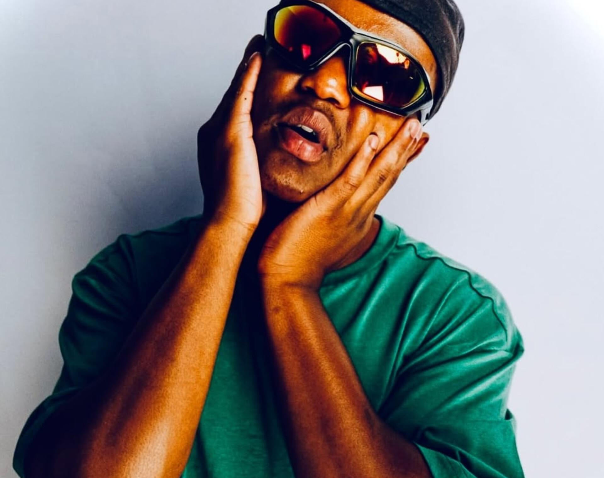

It was in the earliest morning, 3am, I believe. This was when we were most active; nocturnal creatures with a strong affinity for doubling as gas chambers.
"I am glad," I said, "I'm just not good at expressing it."
"You could look happier."
She seemed to always desire more of me. I cannot quite do enough, not that I ever really did try, but I believe it was more a personal dissatisfaction of hers.
"You can also be satisfied with my love. You cannot dictate the how I love you," I stood my ground.
We met at a club in Hatfield. My subservience to her began that very evening. When it comes to rolling doobies by hand; I've never been the type. The actual rolling defeated me in every way then. This challenge of mine caused me to celebrate minor victories — I championed the art of being the dude that actually has weed around, whenever desired. In the carrying of rolling paper I was a gentleman always battling relegation; and that night at the club I had dropped points. Always one to escape my crew on nights out, I went on a trip to find this missing paper so I could get someone to roll for me as well. I was quite demanding as a stoner. As I left the club and its gonging in the distant background, looking for material, is when I saw her; the most beautiful woman I had ever seen. She looked comical and mythical concurrently.
"Excuse me," I said to this angel, noticing that this angel lived in clouds of puffed ganja, "may I bother you in asking for some rolling paper?"
I was quite confident when inebriated with my old friends the Captain Morgan and Johnnie Walker.
The first reaction of someone is their most honest. To go by this principle, I shall regret the bother in her soft face. She was very bothered, something her beauty could not mask well enough then.
"You can share this one with me," she invited me to her grace.
I was not worthy — I felt, and I was cold. But as a proud I hid my ego and braved the ice. The shape of smoke blown out also looked very dope in the cold.
"You're too kind and very prophetic. I would've hated to ask you to roll for me."
By the wings of fortune, she did end up having to roll. That's the second thing we had in common: we were gas giants; consuming copious amounts of smoke.
We were three doobies deep talking about how high we were when it came up that she shares my affinity for balconies. Balconies, to this day, represent a ledge of freedom. You're somewhere up in the sky with a doobie and coffee, and there's also your mind full of song.
"Some Kilo Kish, IAMDDB, Kid Cudi," she spoke of her ideal balcony line-up, "and Cudi doesn't even have to sing. He can hum all night long."
My own playlist consisted of Noname, Childish Gambino, and Masego. This very line-up became somewhat of a staple when loading roadtrip music. It started on our fifth date — a trip from Rosebank to God's Window in Mpumalanga — that she purchased a 4TB memory stick and labelled it "DO NOT FUCKING STOP PLAYING THIS PLAYLIST".
"You should pull through sometime, so we can have you a shoot," I suggested to her.
I had a cowardice within me, I could never really ask someone for something. Here I banked on all my points, especially the truth that she also enjoyed these activities.
She came the very night. We've had roughly two-hundred balcony photoshoots split across fourteen individual balconies all over the globe. That figure should be higher but ironically, literally being too high and her own figure proved to be some of our worst distractions.
"I love you," said she as she nibbled on my right earlobe, "You are my ultimate."
I was taken aback by her; one of few times that she catches me by surprise. She usually put in a great shift of securing her feelings of me away from me. But when it happened, it felt odd — not questioning its authenticity.
"I love you too," I told her. It never felt as meaningful as it felt when leaving my heart. All these days I know I have not been able to best say it, but I have every day wished that at the very least she felt at least half the love that has poured from my soul.
"I bet you'll say that to the next girl," she quipped.
"Only if the current girl is also the next one and the one after that," I warmed her, kissing her petite soft lips.
It wasn't the best kiss — far from. Mind you it was an early morning kiss coupled with the alcoholic burps of the previous night and the earthy smell of sativa. I actually grew to love this smell and taste; it was ours. Being high with my best friend had me feeling as if I had a power in the universe. It could've been the doobies, the booze, or something else entirely, but my soul felt at ease with this woman.
"You get me so high," she said as she switched on her phone whilst lying on my chest, "I get paranoid when deciding if it's you or the weed."
"It must be the weed," I returned while puffing on a great pull, "I certainly have been high every time I've been with you. I honestly believe you'd be boring when sober."
"Hey!" she was triggered. "No sober thoughts during 420."
We laughed at this. 420 meant we would consume more weed than before. As veteran stoners we each came with a 420 record story.
"27 doobies for me tonight. I'm three deep," she affirmed.
A bold record, I mention, but it was futile compared to my own.
"I should welcome you to the 43 club," said I, very proud of myself, "You don't get this skinny smoking joints."
The 43 club is a record number of 43 doobies which I smoked in my second year of university. A few of my friends and I decided that it would be a good idea to skip classes for the day and attend to smoke herb the whole day. I don't remember much about that day, especially the moments between doobies 5 and 18, and also 34–41, but I was very much alive — I believe it to be so. The problem lay not with the smoking but with the physics and chemistry that cursed me as soon as I got up; I recall not being able to make it to the KFC.
"Says the guy that can't roll."
She had me.
"That's why the universe gave us rollers," I dared, "Science gives the people that don't want to do hectic shit the finest tools to do shit easier."